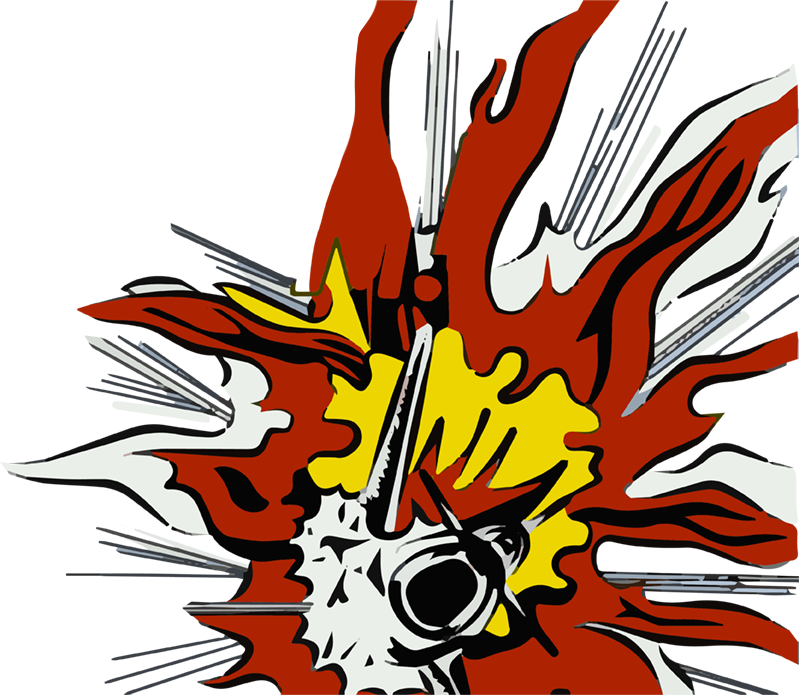
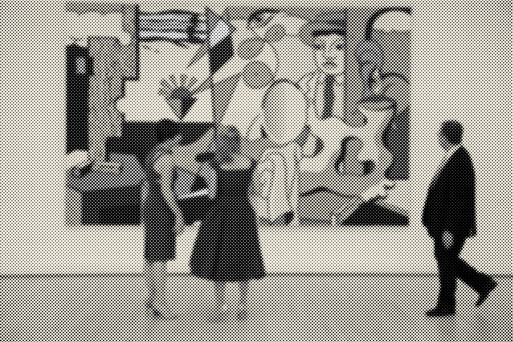

Lichtenstein's work first captured the world's attention in the 1960s, when he became known as one of America's foremost Pop artists. His signature style borrowed from mass culture — particularly comic books and advertising — bringing the look and feel of commercial printing to fine art. Lichtenstein also often paraphrased the history of art in his paintings, referencing canonical masterpieces as well as the tools of art, such as stretchers and brushstrokes.
Roy Lichtenstein presents a thorough selection of these groundbreaking works — including more than 65 paintings and works on paper — chronicling the artist's fascination with the act of art-making over his long career. SFMOMA is the only U.S. venue for this major exhibition.
Exhibition
All About Art
All About Art